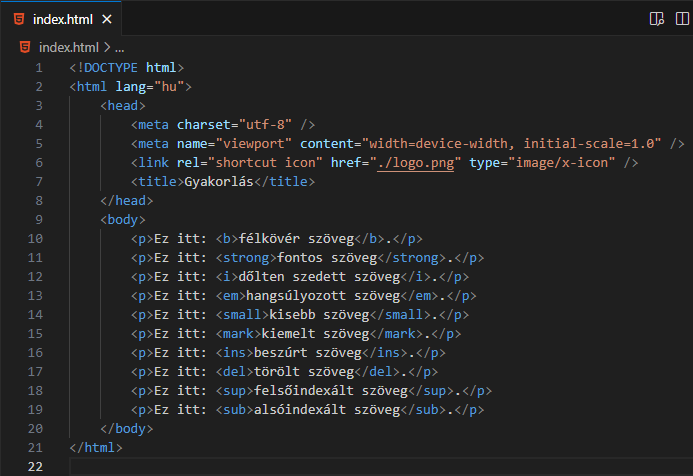
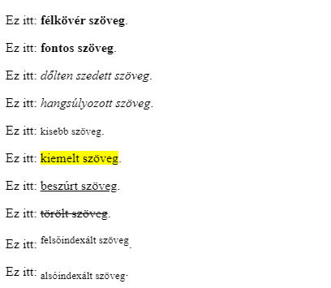

Formatáló (formatting) elemek:
-
Félköver (bold):
- Jelölés: b.
- Félkövér szöveg szedésére.
- Különösebb fontosság nélkül.
-
Beágyazott elem.
-
Fontos (important):
- Jelölés: strong.
- Fontos szöveg szedésére.
- Általában félkövéren szedve.
- Inkább a CSS és JavaScript miatt fontos.
-
Beágyazott elem.
-
Dőlten szedett (italic):
- Jelölés: i.
- Dőlten szedett szöveg szedésére.
-
Technikai kifejezésekhez, más nyelvből vett
kifejezésekhez, hajó nevekhez, gondolatokhoz stb.
-
Beágyazott elem.
-
Hangsúlyozott (emphasized):
- Jelölés: em.
- Dőlten szedett szöveg szedésére.
-
A képernyőolvasók (screen reader) hangsúlyozottabban ejtik ki.
- Inkább a CSS és JavaScript miatt fontos.
-
Beágyazott elem.
-
Kisebb (smaller):
-
Hangsúlyozott (highlighted):
- Jelölés: mark.
-
Színes (általában sárga) háttérszínnel szedett
szöveg jelölésére.
-
Beágyazott elem.
-
Beszúrt (inserted):
- Jelölés: ins.
-
Utólagosan a szövegbe beszúrt elemek jelölésére.
- A böngésző aláhúzással jelöli.
-
Beágyazott elem.
-
Törölt (deleted):
- Jelölés: del.
- A szövegből törölt elemek jelölésére.
- A böngésző áthúzással jelöli.
-
Beágyazott elem.
-
Felsőindexált (superscripted):
- Jelölés: sup.
-
Fél karakterrel a normál szöveg felett kerül
jelölésre.
- A böngésző kisebb betűvel szedi.
-
Leginkább tudományos képletekben, valamint
széljegyzék esetén használható.
-
Beágyazott elem.
-
Alsóindexált (subscripted):
- Jelölés: sub.
-
Fél karakterrel a normál szöveg alatt kerül
jelölésre.
- A böngésző kisebb betűvel szedi.
- Leginkább tudományos képletekben használható.
-
Beágyazott elem.


Források:
w3schools/html
mdn/html